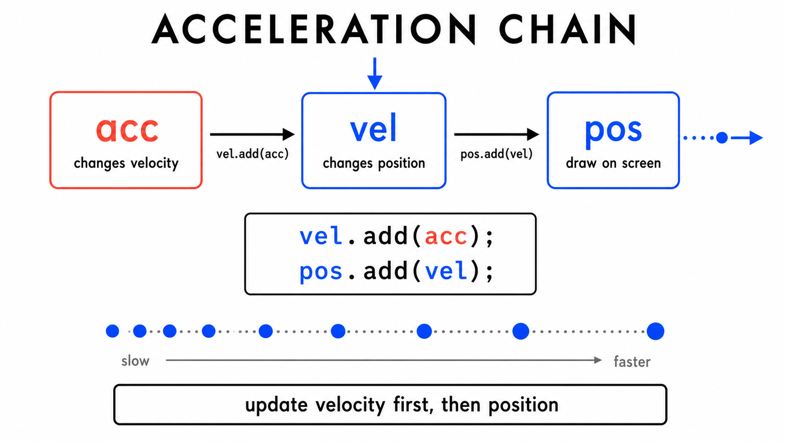
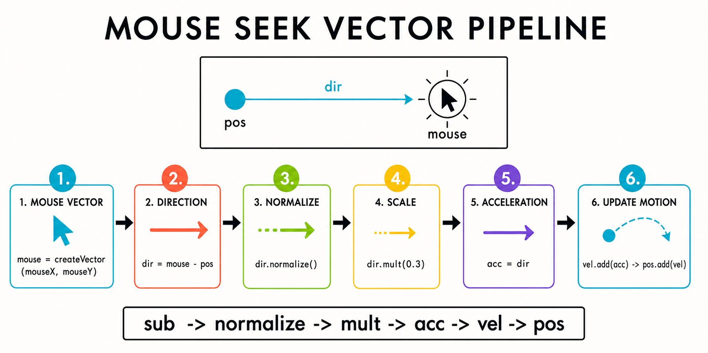
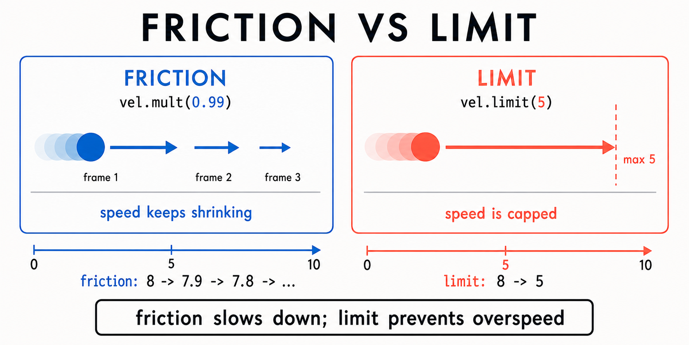
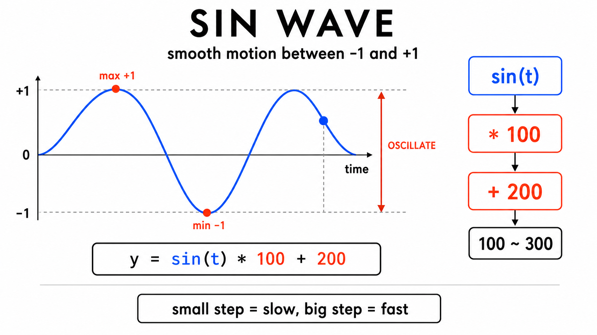
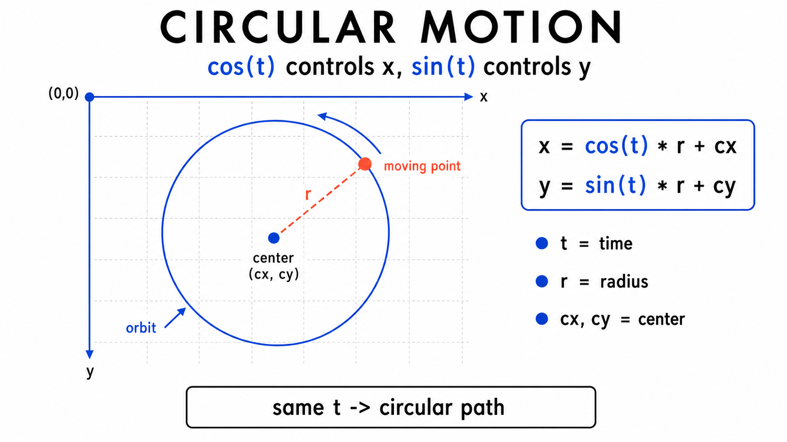
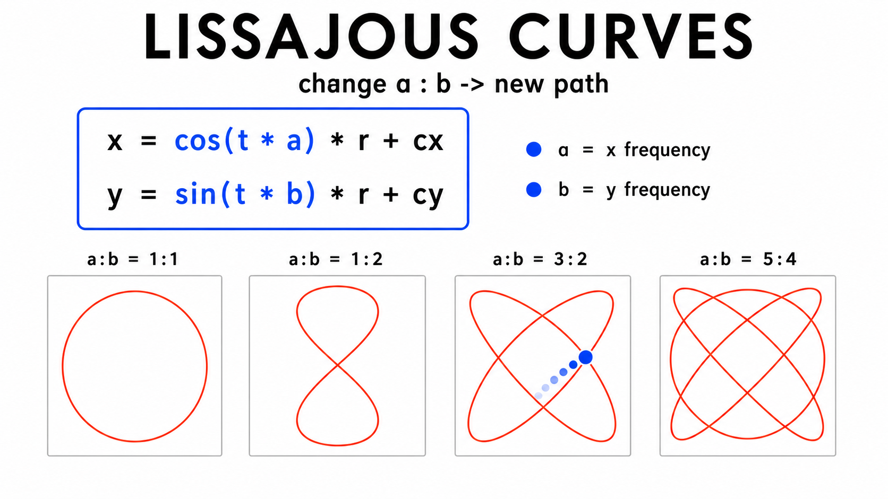
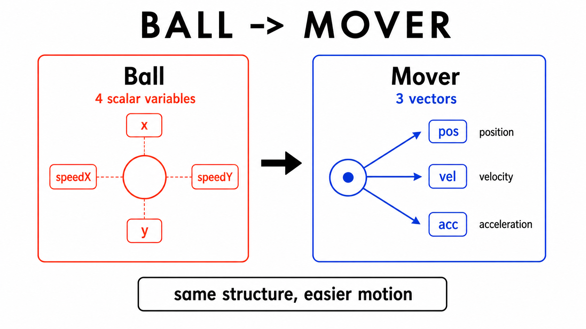
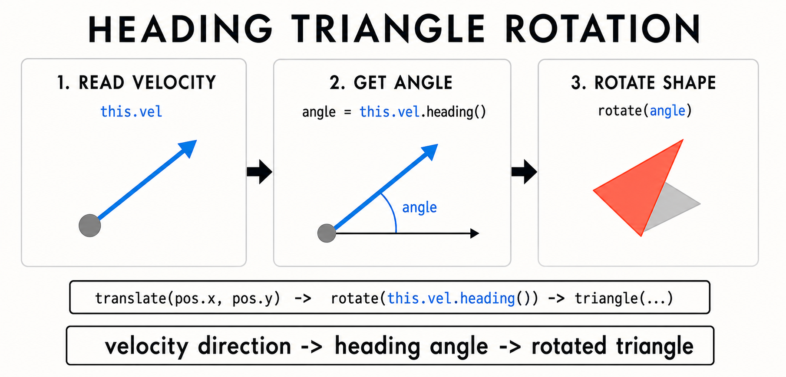
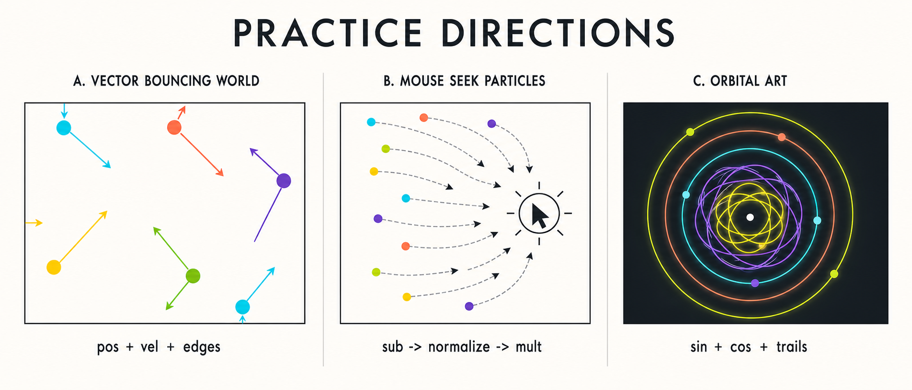

9주차 2교시 — 가속도, 삼각함수, 클래스 결합
강의 아웃라인: week-09-outline 이전 교시: week-09-period1-student (벡터란 무엇인가 + p5.Vector 기본) 다음 교시: week-09-period3-student (학생 주도 실습)
| 항목 | 내용 |
|---|---|
| 대상 | p5.js 입문자 (테크아트 전공) |
| 소요 시간 | 45분 |
| 사전 준비 | 1교시 벡터 기본 (createVector·add·sub·normalize·mult) |
- 가속도(acceleration) 개념을 이해하고,
vel.add(acc)→pos.add(vel)패턴으로 자연스러운 움직임을 구현할 수 있습니다 - 마찰(
vel.mult(0.99))과 속도 상한(vel.limit())의 차이를 이해하고 상황에 맞게 쓸 수 있습니다 - 삼각함수(
sin(),cos())를 활용하여 진동, 원운동, 리사주 곡선을 구현할 수 있습니다 - 7주차 클래스와 벡터를 결합한 Mover 클래스를 설계하고, 배열로 다수의 객체를 관리할 수 있습니다
1교시 핵심 복습
- 벡터 생성:
createVector(x, y) - 위치 이동:
pos.add(vel) - 방향만 남기기:
normalize()
1교시에서 pos.add(vel) 한 줄로 구현한 움직임은
등속 직선 운동, 즉 항상 같은 속도와 같은 방향의
움직임이었습니다.
현실의 물체는 일정한 속도로만 움직이지 않습니다. 떨어지는 공은 점점 빨라지고, 위로 던진 공은 점점 느려집니다. 이렇게 속도를 계속 바꾸는 벡터가 가속도입니다.
심화 개념 1 — 가속도(Acceleration): 속도를 바꾸는 벡터
일상 비유: 자동차의 가속 페달과 브레이크
가속도는 속도를 바꾸는 벡터입니다.
| 자동차 | 벡터 이름 | 하는 일 |
|---|---|---|
| 현재 위치 (지도 위 좌표) | pos | 어디에 있는가 |
| 속도계 (시속 몇 km) | vel | 얼마나 빨리, 어느 방향으로 움직이는가 |
| 가속 페달 (얼마나 밟았나) | acc | 속도를 얼마나 바꾸는가 |
- 가속 페달: 속도를 증가시키는 가속도
- 브레이크: 속도를 줄이는 반대 방향 가속도
- 중력: 아래 방향으로 계속 더해지는 가속도
위치 ← 속도 ← 가속도 (3단계 사슬)

| 물리 | 역할 | 코드 |
|---|---|---|
| 가속도(acceleration) | 속도를 바꾼다 | vel.add(acc) |
| 속도(velocity) | 위치를 바꾼다 | pos.add(vel) |
| 위치(position) | 화면에 그린다 | ellipse(pos.x, pos.y, 30) |
가속도가 속도를 바꾸고 속도가 위치를 바꾸는 이 두 줄이 자연스러운 움직임의 핵심입니다.
vel.add(acc); // 가속도 → 속도에 반영
pos.add(vel); // 속도 → 위치에 반영1교시의 pos.add(vel) 앞에 vel.add(acc)가
추가됩니다.
중력 시뮬레이션
let pos, vel, acc;
function setup() {
createCanvas(400, 400);
pos = createVector(200, 50);
vel = createVector(0, 0); // 처음에는 정지
acc = createVector(0, 0.1); // 아래 방향 가속도
}
function draw() {
background(220);
vel.add(acc); // 매 프레임 속도가 아래로 0.1씩 증가
pos.add(vel); // 바뀐 속도로 위치 이동
ellipse(pos.x, pos.y, 30);
}실행 결과: - 원이 위에서 아래로 떨어짐 - 처음에는 느리다가 점점 빨라짐 — 가속도가 적용된 낙하
가속도 (0, 0.1)은 매 프레임 아래 방향 속도를 0.1씩
증가시키며, 중력처럼 보이는 움직임을 만듭니다.
벡터를 쓰면 x, y 방향 가속도를 동시에 다룰 수 있습니다.
가속도 값 변경 실험
| acc 값 | 효과 |
|---|---|
(0, 0.1) |
부드러운 낙하 |
(0, 0.5) |
빠른 낙하 (강한 아래 방향 가속) |
(0.05, 0.1) |
대각선 가속 — 아래 방향 가속 + 오른쪽 가속 |
(0, -0.1) |
위로 떠오르는 효과 (위 방향 가속) |
가속도를 (0.1, 0)으로 설정하면 공이 어떻게 움직일까요?
답: 오른쪽으로 점점 빨라집니다. x 방향으로만 가속하기 때문입니다.
심화 개념 2 — 마우스를 향해 가속하기
sub(), normalize(), mult()를
조합해 마우스를 향해 따라가는 공을 만듭니다.
let pos, vel, acc;
function setup() {
createCanvas(400, 400);
pos = createVector(200, 200);
vel = createVector(0, 0);
acc = createVector(0, 0);
}
function draw() {
background(220);
// 1. 마우스 위치를 벡터로
let mouse = createVector(mouseX, mouseY);
// 2. 공 → 마우스 방향 벡터 구하기
let dir = p5.Vector.sub(mouse, pos);
// 3. 방향만 남기기 (크기 = 1)
dir.normalize();
// 4. 가속 크기 조절
dir.mult(0.5);
// 5. 가속도로 설정
acc = dir;
// 6. 물리 업데이트
vel.add(acc);
pos.add(vel);
// 7. 마찰 — 매 프레임 속도를 1% 줄임
vel.mult(0.99);
ellipse(pos.x, pos.y, 20);
}실행 결과: - 원이 마우스 방향으로 이동함 - 마우스를 빠르게 옮기면 관성으로 지나쳤다가 다시 돌아옴 - 점차 마우스 위치에 수렴
패턴: sub()로 방향 구하기 → normalize()로
방향만 남기기 → mult()로 크기 조절 → 가속도에 반영.

속도 제어 두 가지 방식 — 마찰 vs 상한
가속도를 계속 더하면 속도가 커지므로 제어가 필요합니다.
방식 1: 마찰 — vel.mult(0.99)
vel.mult(0.99)는 매 프레임 속도를 1%씩
줄여, 일정 속도 이상에서는 감속되고 정지에 가까울수록 움직임이
잦아들게 합니다. 부드러운 감속이 필요할 때 씁니다.
방식 2: 속도 상한 — vel.limit(5)
vel.limit(5)는 속도가 5를 넘지 않도록 상한을
설정합니다. 5주차 constrain()을 벡터에 적용한
방식으로 볼 수 있습니다.
vel.mult(0.99); // 마찰: 점점 느려지게
vel.limit(5); // 상한: 너무 빨라지는 건 막되 느려지진 않음
| 방식 | 특징 | 언제 쓰나 |
|---|---|---|
vel.mult(0.99) |
점점 느려진다 (계속 깎임) | 관성 있는 추적, 자연스러운 정지 |
vel.limit(5) |
최대 속도를 고정 | 캐릭터 이동 속도 제한, 과도한 가속 방지 |
두 방식을 함께 사용하면 감속과 속도 제한을 동시에 적용할 수 있습니다.
sub() → normalize() → mult() →
가속도 패턴은 10주차에 힘(force)을 구현할 때도 다시
사용합니다.
심화 개념 3 — 삼각함수: sin()과 cos()로 원운동
라디안과 속도 조절 값
아래 코드의 frameCount * 0.03에서 0.03은 각도가 변하는
속도를 조절하는 값입니다. 수학적으로는 라디안 단위와 연결되지만, 이번
시간에는 속도 조절 값으로 사용합니다.
핵심은 값이 작을수록 느리게, 클수록 빠르게 움직인다는 점입니다. 0.01, 0.03, 0.05, 0.1처럼 값을 바꾸며 속도 차이를 확인하면 됩니다.
sin()의 핵심:
-1 ~ 1 사이를 부드럽게 왕복
sin()은 시간에 따라 -1에서 1 사이를 부드럽게
왕복하는 값을 만든다고 이해하면 됩니다.

function draw() {
background(220);
let y = sin(frameCount * 0.05) * 100 + 200;
ellipse(200, y, 30);
}실행 결과: - 원이 y축으로 위아래 부드럽게 진동 - 바운싱과 달리 벽에 부딪히지 않고도 자연스럽게 왕복
| 부분 | 역할 | 값의 범위 |
|---|---|---|
sin(frameCount * 0.05) |
시간에 따라 -1~1 왕복 | -1 ~ 1 |
* 100 |
왕복 범위를 100으로 확대 | -100 ~ 100 |
+ 200 |
중심을 200으로 이동 | 100 ~ 300 |
sin() 값(-1~1)에 원하는 범위를 곱하고 중심을 더해주면
되며, 5주차 map() 함수처럼 값의 범위를 바꾸는
원리입니다.
frameCount * 0.05의 숫자가 움직임의 속도를 정합니다.
값이 작을수록 느리고, 클수록 빠르게 왕복합니다.
cos() + sin() =
원운동
function draw() {
background(220);
let x = cos(frameCount * 0.03) * 100 + 200;
let y = sin(frameCount * 0.03) * 100 + 200;
ellipse(x, y, 20);
}실행 결과: - 원이 (200, 200)을 중심으로 원형 궤도를 따라 이동

x에 cos(), y에 sin()을 사용하면
원운동이 됩니다. 행성 공전, 시계 바늘, 궤도
애니메이션도 같은 구조로 설명할 수 있습니다.
| 조절 | 값 | 효과 |
|---|---|---|
* 0.03 |
주파수 | 작으면 느리게, 크면 빠르게 회전 |
* 100 |
반지름 | 작으면 작은 원, 크면 큰 원 |
+ 200 |
중심 좌표 | 원운동의 중심점 |
진동과 원운동 비교
| 패턴 | 코드 | 결과 |
|---|---|---|
| y축 진동 | y = sin(t) * r + cy |
위아래 왕복 |
| 원운동 | x = cos(t) * r + cx,
y = sin(t) * r + cy |
원형 궤도 |
| 리사주 곡선 | x = cos(t * a) * r,
y = sin(t * b) * r |
다양한 예술적 패턴 |
리사주 곡선 — 주파수 비율만 바꾸면 새로운 패턴
방금 원운동에서는 x에 cos(t), y에
sin(t)처럼 같은 주파수를 썼습니다. 두
주파수를 다르게 하면 다른 패턴이 나옵니다.
function setup() {
createCanvas(400, 400);
colorMode(HSB, 360, 100, 100, 100);
}
function draw() {
// background(220); // 주석 처리 → 궤적이 쌓여 리사주 곡선이 그려짐
let t = frameCount * 0.02;
let x = cos(t * 3) * 150 + 200; // a = 3
let y = sin(t * 2) * 150 + 200; // b = 2
noStroke();
fill(frameCount % 360, 80, 100, 20);
ellipse(x, y, 5);
}실행 결과: - 단순한 원이 아니라 꼬인
곡선(리사주 곡선)이 점점 그려짐 - a:b = 3:2면 특정
패턴, 5:4면 또 다른 패턴 — 다양한 변형

이것이 리사주 곡선(Lissajous Curve)입니다.
cos와 sin의 주파수 비율만 바꿔도 다양한 패턴이
만들어지고, 배경을 지우지 않으면 궤적이 쌓여 작품처럼 보입니다.
cos(t * a), sin(t * b)의 a,
b 값을 조절하면 패턴이 달라집니다.
sin(frameCount * 0.05) * 50 + 200이면 y 좌표는 어느
범위를 오갈까요?
답: 150에서 250 사이입니다. sin의 -1~1에 50을 곱하면 -50~50이고, 200을 더하면 150~250입니다.
심화 개념 4 — Mover 클래스: 7주차 클래스 + 9주차 벡터 결합
7주차 Ball 클래스를 벡터 기반 Mover 클래스로 확장합니다.
Mover 클래스 전체 코드
class Mover {
constructor(x, y) {
this.pos = createVector(x, y);
this.vel = createVector(random(-2, 2), random(-2, 2));
this.acc = createVector(0, 0);
}
update() {
this.vel.add(this.acc); // 가속도 → 속도
this.pos.add(this.vel); // 속도 → 위치
this.acc.mult(0); // 가속도 초기화
}
display() {
fill(127);
noStroke();
ellipse(this.pos.x, this.pos.y, 30);
}
edges() {
if (this.pos.x > width) this.pos.x = 0;
if (this.pos.x < 0) this.pos.x = width;
if (this.pos.y > height) this.pos.y = 0;
if (this.pos.y < 0) this.pos.y = height;
}
}7주차 Ball vs 9주차 Mover 비교

| 7주차 Ball | 9주차 Mover | |
|---|---|---|
| 위치 | this.x, this.y (변수 2개) |
this.pos (벡터 1개) |
| 속도 | this.speedX, this.speedY (변수 2개) |
this.vel (벡터 1개) |
| 가속도 | 없음 | this.acc (벡터 1개) |
| 이동 | this.x += this.speedX; (2줄) |
this.pos.add(this.vel); (1줄) |
| 변수 총 | 4개 | 벡터 3개 (가속도 포함) |
Mover는 위치, 속도, 가속도를 각각 벡터로 관리합니다.
this.acc.mult(0)
— 왜 가속도를 초기화하나?
update() 마지막의 this.acc.mult(0)은
가속도를 (0, 0)으로 초기화하는 코드입니다.
this.acc.mult(0)은 매 프레임 가속도를 초기화합니다. 이전
프레임의 가속도가 계속 남지 않도록 하는 패턴입니다.
setup()/draw()에서 사용하기
let mover;
function setup() {
createCanvas(400, 400);
mover = new Mover(200, 200);
}
function draw() {
background(220);
mover.update();
mover.edges();
mover.display();
}배열로 다수 생성 (7주차 패턴 활용)
let movers = [];
function setup() {
createCanvas(400, 400);
for (let i = 0; i < 20; i++) {
movers.push(new Mover(random(width), random(height)));
}
}
function draw() {
background(220);
for (let m of movers) {
m.update();
m.edges();
m.display();
}
}실행 결과: - 20개의 회색 원이 각각 다른 방향, 다른 속도로 화면에서 이동함 - 화면 밖으로 나가면 반대쪽에서 등장 (래핑)
7주차 배열 + 클래스 패턴과 같고, 클래스 내부만 벡터 기반으로 바뀝니다.
확장: heading()으로
방향 시각화
속도 벡터 vel의 방향을 그림의 회전에 반영할 때
heading()을 사용합니다.
display() {
push();
translate(this.pos.x, this.pos.y); // 객체 위치로 이동
rotate(this.vel.heading()); // 속도 방향으로 회전
fill(127);
noStroke();
triangle(-10, -5, -10, 5, 10, 0); // 오른쪽을 향한 삼각형
pop();
}
vel.heading()은 속도 벡터의 각도를
구합니다. rotate()로 그 각도만큼 돌리면, 원래 오른쪽을
향하던 삼각형이 속도 방향을 가리키게 됩니다.
순서: translate() →
rotate(this.vel.heading()) → 모양 그리기 →
pop().
Mover 클래스에서 update() 메서드 안의 두 줄 순서를
바꾸면(pos.add(vel) 먼저, vel.add(acc) 나중에)
결과가 달라질까요?
답: 네, 달라집니다. 가속도가 적용된 속도로 위치를 바꿔야 자연스럽습니다. 순서가 중요합니다.
실전 사례 요약
사례 1: 중력 낙하 + 바닥 바운싱
- 핵심 코드:
acc = createVector(0, 0.2),vel.y *= -0.8 - 효과: 중력 낙하 + 에너지 손실이 있는 바운싱
사례 2: 마우스 추적 Mover 20개
- 핵심 코드:
p5.Vector.sub(mouse, this.pos),normalize(),mult(0.3),vel.mult(0.98) - 효과: 마우스 방향 가속 + 마찰 + 잔상
사례 3: sin/cos 원운동 + 궤적 시각화
- 핵심 코드:
cos(angle),sin(angle),cos(angle * 3),sin(angle * 3) - 효과: 중첩된 원운동 + 궤적 패턴
3교시 실습 안내
세 가지 방향 (난이도 표시)

| 방향 | 난이도 | 설명 | 핵심 기법 |
|---|---|---|---|
| A. 벡터 바운싱 월드 | 기본 | Mover 클래스 + 벽 바운싱 + 다양한 속도/크기 | pos.add(vel), vel.x *= -1 |
| B. 마우스 추적 파티클 | 중 | Mover 배열 + 마우스 방향 가속 + 마찰 / limit | sub(), normalize(), mult(),
limit() |
| C. 삼각함수 궤도 아트 | 중 | sin/cos 원운동 + 반지름 변화 + 리사주 + 궤적 | sin(), cos(), 잔상 효과 |
필수 요구사항
| # | 요구사항 |
|---|---|
| 1 | createVector()로 위치와 속도를 벡터로 관리 |
| 2 | add() 등 벡터 연산 1개 이상 사용 |
| 3 | 클래스 정의 (벡터 프로퍼티 + 메서드 2개 이상) |
| 4 | 다수의 객체를 배열로 관리 (5개 이상) |